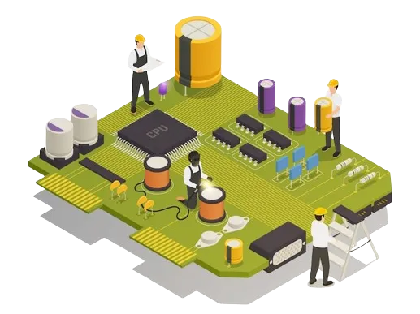

Electronics & Communication Engineering
Electronics and Communication Engineering is about electronic components, integrated circuits and microprocessors and consists of design, fabricate, test, maintain and supervise the manufacture of electronic equipment. This branch Of Engineering has a key place in the field of computers, Information Technology, Electrical, power system operations, communication systems etc.
Competency Profile
- To fabricate and test electronic circuits
- Manufacturing, testing and maintenance of electronic devices and systems.
- To understand the construction, identification, characteristics, specifications, merits, limitations and applications of electronic components and materials
- To understand lines communication, audio and video communication, and microwave communication

| SERIAL NO. | NAME OF LAB |
|---|---|
| 1. | T.V ENGINEERING LAB |
| 2. | COMMUNICATION LAB |
| 3. | INSTRUMENTATION & P.L.C LAB |
| 4. | DIGITAL ELECTRONICS AND MICROPROCESSOR LAB |
| 5. | ELECTRICAL MACHINE LAB |
| 6. | BASIC ELECTRONICS LAB |
| 7. | COMPUTER LAB |
| 8. | PROJECT LAB |